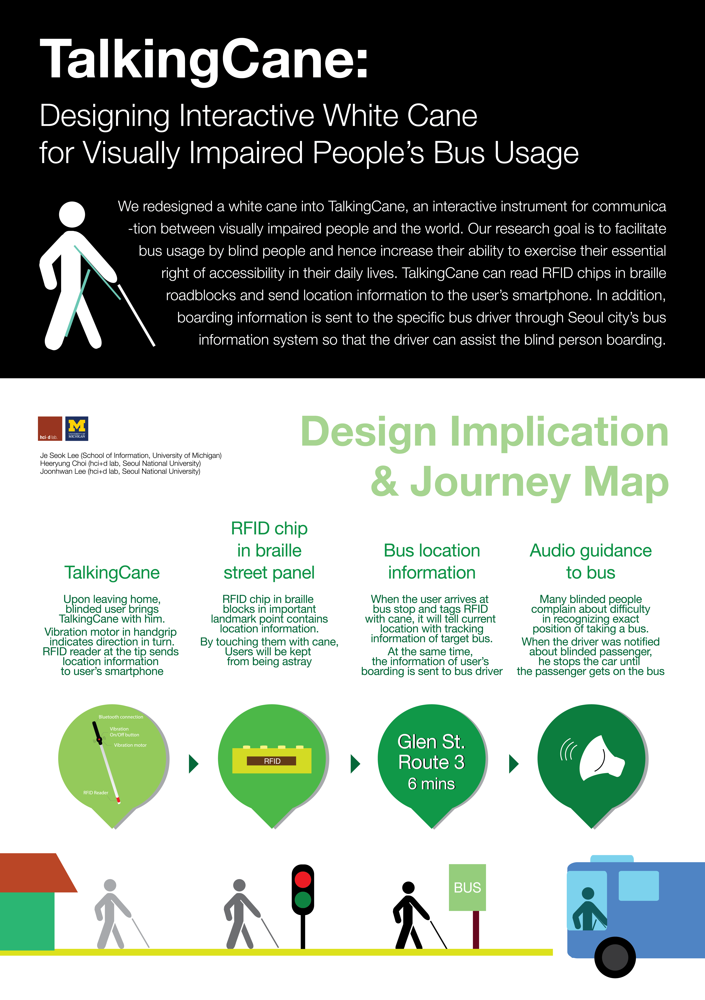
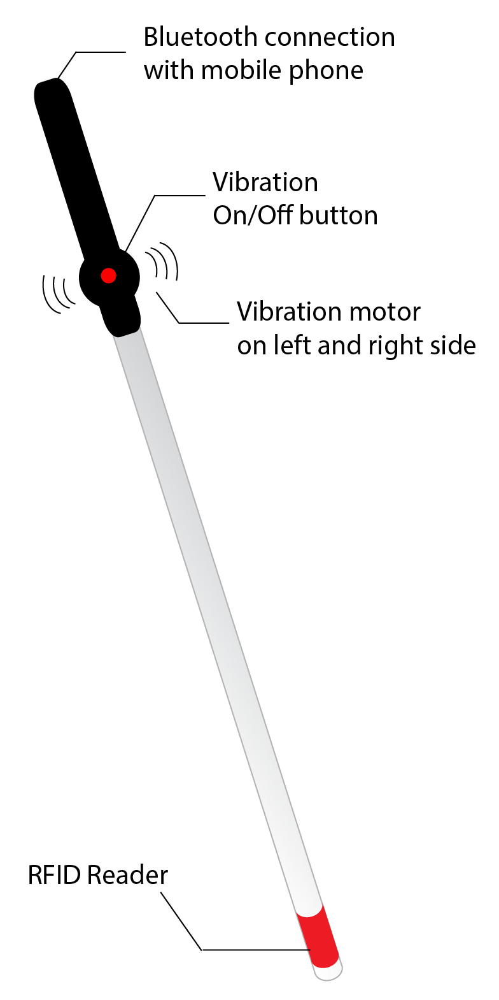
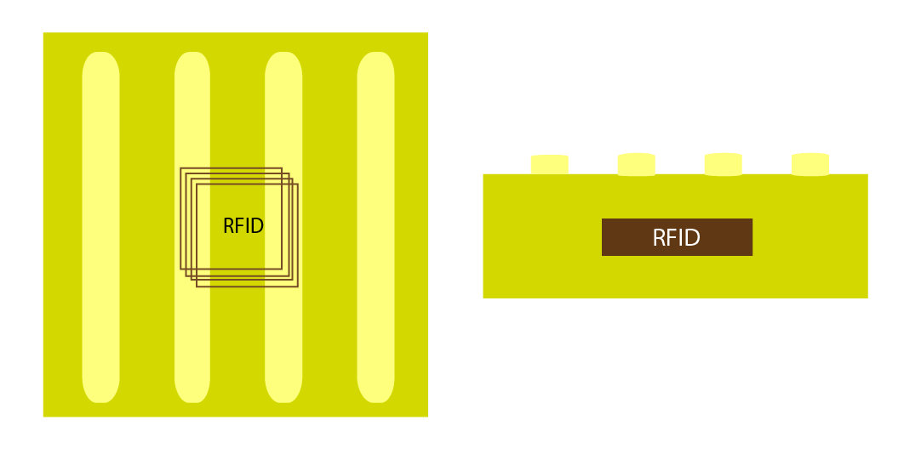
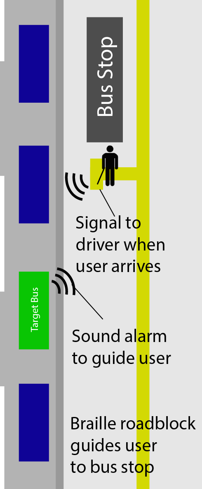
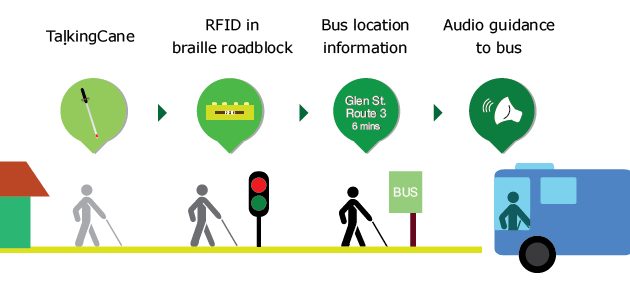

TalkingCane: Designing Interactive White Cane for Visually Impaired People’s Bus Usage
Research Project
Copyright is held by the owner/author(s).
MobileHCI '15 Proceeding, August 25-28, 2015, Copenhagen, Denmark
ACM 978-1-4503-3653-6/15/08. Available at
http://dx.doi.org/10.1145/2786567.2793686
Intro
In this paper, I redesigned a white cane into TalkingCane, an
interactive instrument for communication between visually impaired
people and the world. The research goal is to facilitate bus usage
by blind people and hence increase their ability to exercise their
essential right of accessibility in their daily lives.

Click for large image. Poster presented at MobileHCI 2015
Created by Jeseok Lee. Adobe Illustrator.
Literature review
We started with literature reviews of data from visual impairment
organizations such as Korean Blind Union. We focused on next three things to
discover visually impaired people's behavior:
Needs for traveling and difficulties in using public transportation
Assistive technology for the visually impaired people's travel
Limitations of applications based on Bus Information Service (BIS)
Design Implication
We designed a new way of communication between visually impaired people and their
surroundings; a communication between a portable device and public data recorded on
the The elements that compose our system include the following: smartphone, white cane
with vibration motor and radio frequency identification (RFID) reader, passive
RFID-planted braille blocks, and communication system between user and bus driver.
Before elaborating the proposed design solution, we will first describe how each
instrument works.
White cane
We tried to meliorate the current situation through the widely used apparatus,
a white cane. This is because it is inadvisable to require extra effort due to other
unfamiliar items. To most of the visually impaired, a white cane is an essential tool
that supports daily life. We adopt vibrations instead of sounds such as voice guidance,
which can hinder detection of obstacles through the sense of hearing.
This will prevent possible confusion caused by overlapped or reiterated feedback.

Design of Talking Cane
Created by Jeseok Lee. Adobe Illustrator.
At the tip of the cane, the RFID reader is implanted to read RFID chips buried in
braille roadblocks. The RFID chips contain location information that will be sent to
a smartphone once tagged by a white cane. Then, the smartphone speaks the information
to the user through earphones.
Braille road block
Braille blocks and a passive RFID chip were chosen, since braille blocks have strength
in their large establishment rate and wide usage and a passive RFID chip is durable
enough to be installed and operate well inside the blocks.
A passive RFID chip does not require a power source such as batteries, and it is able
to be manufactured as waterproof. Each RFID contains location information, such as street
names and the names of landmarks, to assist the users in finding the direction.
Those special braille blocks with built-in RFID can be installed on various significant
spots like crosswalks, building entrances, pedestrian overpasses, under passageways,
and bus stops.

Design of Braille Panels with RFID Chips
Created by Jeseok Lee. Adobe Illustrator.
Communication system between bus drivers and users

Communication Channel with Bus Driver
Created by Jeseok Lee. Adobe Illustrator.
Bus stops in Seoul give voice announcements telling the route numbers of incoming buses.
However, a problem arises when multiple buses arrive at the bus stop since visually
impaired users hardly recognize the right bus. Therefore, we propose a communication
system between bus drivers and users. Bus information system in Seoul, which is operated
by the Seoul city government, provides transit information including real-time bus
location using GPS on every bus. Now, every bus has a device to check the distance between
buses back and forth. Furthermore, drivers can communicate with dispatchers and other
drivers in order to keep buses on schedule. If people with visual impairment can employ
the system, they can send signals to a specific bus driver through an application.
Considering that one of the main concerns of bus usage is how to recognize the correct
boarding location among several buses, such mobile applications can be conducive to the
safe boarding of buses. By promoting communication between users and drivers with the
application, drivers can be more advertent of visually impaired passengers waiting at
the bus stop.
Journey map

Journey of taking a bus with Talking Cane
Created by Jeseok Lee. Adobe Illustrator.
First, users input their destination on the smartphone application. The input data
will be delivered through voice recognition technology since it is difficult for
visually impaired people to utilize a touch screen to type words into their phone.
Then, by using map data, the application suggests a recommended route including both
pedestrian paths and transportation transits. While walking on the pedestrian walkaways,
the user can use his or her own white cane in two ways. Firstly, as usual, users can
rely on his or her cane to avoid immediate obstacles in the way, for which application
guidance cannot be provide forewarning. The user follows braille roadblocks with his or
her white cane.
As it follows the braille roadblocks, the cane will operate the second
function; hitting braille roadblocks with this newly designed cane, an RFID reader at the
tip of the cane reads location information from RFID chips in roadblocks. Then, the white
cane sends location information to a smartphone.
When a user has to be informed of the exact direction or has to make a turn at the corner,
vibration motors in the handgrip tell users which direction to go, and how many degrees
to turn. Along with vibration, the user’s smartphone tells a few types of necessary
information to the user with voice: landmarks, the ends of each block, crosswalks, and
corners. Due to the process, users can find where they are and thus do not feel astray.
At the bus stop, the user waits for the right bus. When the user arrives at the bus stop
and tags the RFID chip with the white cane, a notification is sent to the bus driver.
When the bus arrives, it will make an audio signal from the front door so that the
blinded person can recognize distance and direction to the door.
Conclusion
The unique contribution of TalkingCane is to combine shared public data with a white cane
to improve traveling experience of the visually impaired without introducing additional
gadgets. Our objective is to help visually impaired people take buses easily by increasing
accessibility. We conducted a literature review to find visually impaired people’s
difficulties in taking buses.
During the review, we discovered the need for communication
technology between visually impaired users and the world for a better traveling experience.
To establish the communication, a white cane and braille roadblocks were chosen as new
interactive devices. Many of our target user groups already use them in their daily lives.
The white cane was a great device to apply haptic feedback for terrain obstacles and become
an RFID reader as communication equipment.
{kind=link}